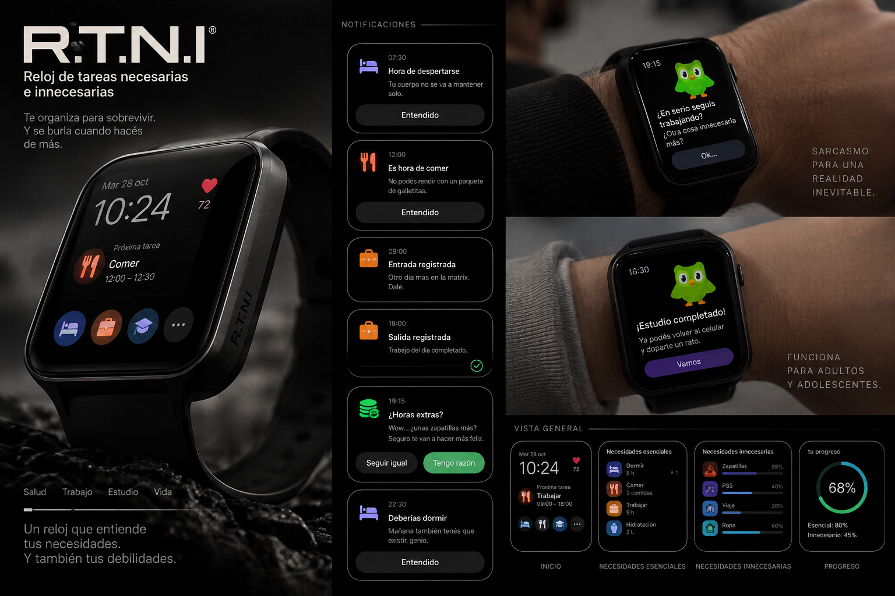

PARCIAL 2 · CULTURA Y MEDIOS
R.T.N.I
Reloj de Tareas Necesarias e Innecesarias
Te organiza para sobrevivir. Y se burla cuando hacés de más.

19:15 · ¿HORAS EXTRAS?
Wow… ¿unas zapatillas más? Seguro te van a hacer más feliz.
R.T.N.I · OS
02 / 11
EL OBJETO
¿Qué es el R.T.N.I?
Un reloj inteligente que te avisa qué hacer en cada momento del día… y se burla de vos cuando trabajás para cosas que no necesitás.
Lee tu cuerpo
Se conecta a tu sistema nervioso y cardíaco para saber qué deseás.
Ordena tu día
Te avisa cuándo comer, dormir, trabajar o estudiar.
Te juzga
Comentarios sarcásticos, estilo Duolingo, ante lo innecesario.
R.T.N.I · OS
03 / 11
EL PRODUCTO
Así se ve el R.T.N.I

Pantalla principal
La próxima tarea del día y tu pulso en tiempo real.
Notificaciones
Avisos para lo esencial y sarcasmo para lo innecesario.
Vista general
Separa necesidades esenciales e innecesarias, con tu progreso.
R.T.N.I · OS
04 / 11
EL FUNCIONAMIENTO
Cómo funciona
Público adulto
1
Registra la entrada y la salida del trabajo.
2
Avisa cuándo comer, dormir y trabajar para lo esencial: comida, hogar y ropa.
3
Detecta las horas extra hechas para pagar deseos innecesarios.
4
Envía una notificación sarcástica, estilo Duolingo.
Público adolescente
1
Registra la hora de inicio y fin del estudio.
2
Avisa cuándo comer y dormir.
3
Al terminar, te “libera” con un comentario sarcástico.
4
Te recuerda que podés volver al celular por tu dosis de dopamina.
R.T.N.I · OS
05 / 11
LAS NOTIFICACIONES
El reloj te habla así
ADULTO · 09:00
Entrada registrada
Otro día más en la matrix. Dale.
✓ Registrado
ADULTO · 19:15
¿Horas extras?
Wow… ¿unas zapatillas más? Seguro te van a hacer más feliz.
Seguir igual
Tengo razón
ADOLESCENTE · 16:30
¡Estudio completado!
Ya podés volver al celular y doparte un rato.
Vamos
El humor hace visible algo que normalmente no cuestionamos: para qué trabajamos y qué deseamos.
R.T.N.I · OS
06 / 11
LA BASE TEÓRICA
La teoría crítica
La industria cultural es la forma que adopta la cultura en la sociedad industrial avanzada: sin libertad y con dominación constante.
El R.T.N.I exagera esta idea: muestra cómo trabajamos para desear lo que el sistema nos sugiere.
Necesidades esenciales
Comer, dormir, tener un hogar y ropa: lo necesario para vivir.
Necesidades innecesarias
Deseos creados por el consumo y la publicidad, que nos hacen trabajar más.
CONTROL
R.T.N.I · OS
07 / 11
MIRADA APOCALÍPTICA
El reloj como herramienta de control
Control de las conciencias
Lee tu sistema nervioso y cardíaco: ni siquiera tus deseos quedan fuera del sistema.
Te dice qué desear
Sabe lo que querés antes que vos, como la publicidad que sugiere qué consumir.
Sujetos heterodirigidos
Otro decide cuándo comer, dormir, trabajar o estudiar. La persona pierde autonomía.
Conformismo
El sarcasmo te hace reír, pero no cambia nada: al otro día seguís haciendo horas extra.
CONCIENCIA
R.T.N.I · OS
08 / 11
MIRADA INTEGRADA
El reloj como herramienta de conciencia
Hace visible el consumo
Muestra la diferencia entre lo que necesitás y lo que te hicieron desear.
Cuida la salud
Recuerda comer y dormir, y ayuda a evitar el agotamiento por exceso de trabajo.
Una crítica que llega a todos
El humor estilo Duolingo transmite una idea crítica de forma simple y masiva.
Más autonomía
Con esa información, cada persona decide si vale la pena la hora extra o el celular.
R.T.N.I · OS
09 / 11
CARA A CARA
Comparación de las dos posturas
| Aspecto | Apocalíptico | Integrado |
|---|---|---|
| Lectura del cuerpo | Vigilancia y control | Autoconocimiento |
| Notificaciones | Te ordenan la vida | Te ayudan a organizarte |
| Sarcasmo | Humor que no cambia nada | Crítica accesible y masiva |
| Adolescentes | Otro dispositivo que los controla | Les muestra su dependencia del celular |
| Producto masivo | La industria cultural vende su propia crítica | Democratiza el pensamiento crítico |
R.T.N.I · OS
10 / 11
LA SOLUCIÓN DE UMBERTO ECO
Un término medio
No tiene sentido discutir si el R.T.N.I es bueno o malo: la tecnología que mide y organiza nuestra vida ya existe.
La pregunta es cómo usarlo para formar personas más conscientes, y no solo consumidores.
Propuesta: que diseñadores, educadores y “hombres de cultura” participen en su diseño, para que el reloj, además de entretener, forme.
R.T.N.I · OS
11 / 11
CONCLUSIÓN
Para criticar el consumo, primero hay que comprar un reloj.
El R.T.N.I es una crítica a la industria cultural y, a la vez, un producto de ella. Esa contradicción nos deja una pregunta: ¿se puede escapar del sistema usando sus propias herramientas?
Gracias.